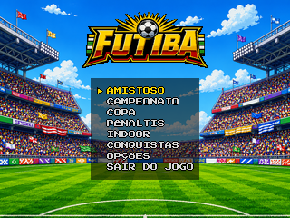
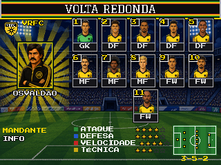
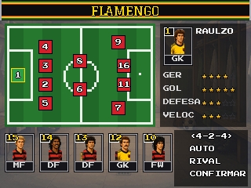
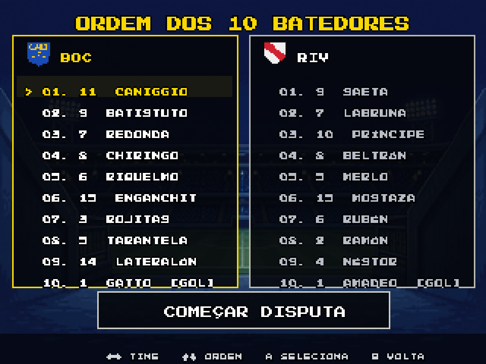
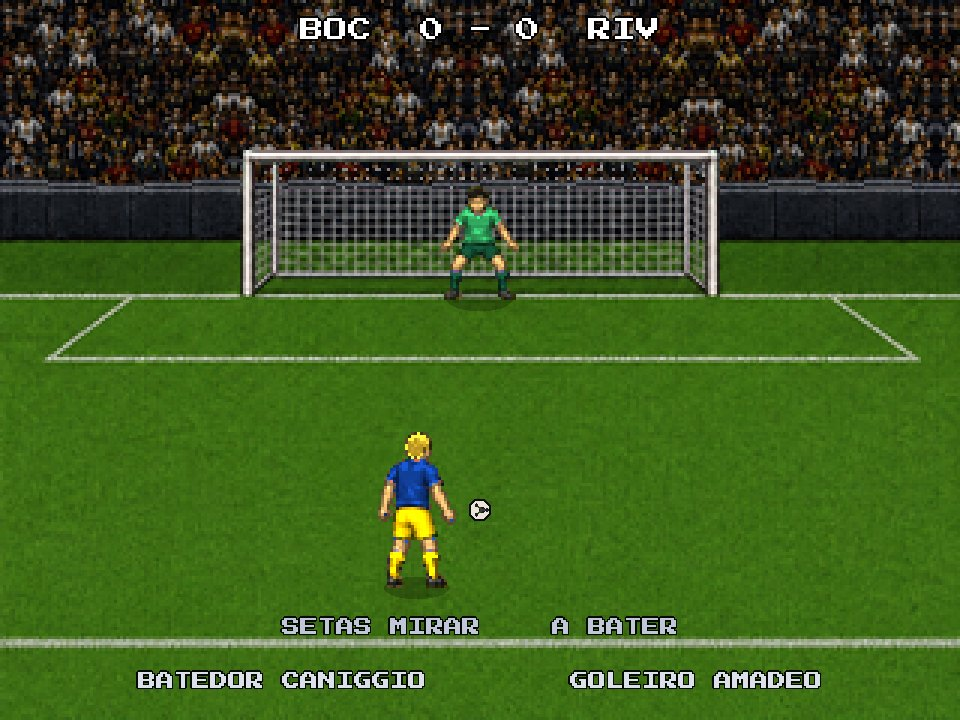
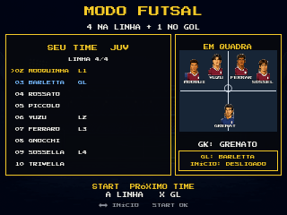
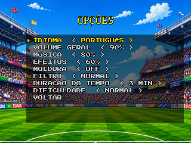

FUTEBOL DO NOSSO JEITO
AMISTOSO • CAMPEONATO • COPA • PÊNALTIS • FUTSAL • PAREDÃO
PC (teclado e controle) • Android (toque e controle) • referência: build 52.9
BOLA ROLANDO.
FUTIBA é futebol de videogame do jeito antigo: passe rápido, carrinho que pesa, goleiro que decide. Menos botão, mais leitura de jogo: o mesmo botão muda de função com e sem a bola.
Amistoso para ir direto ao jogo, Campeonato e Copa para campanha, Pênaltis para duelo, Indoor para futsal e paredão.
32 clubes, cada um com elenco, atributos, formação e retrato de cada jogador.
Ajuste a escalação e o esquema. No futsal e no paredão, marque quem joga na linha.
Leia o campo, toque a bola e escolha a hora do chute.

DO MENU AO CÍRCULO CENTRAL.
O caminho de uma partida no campo. Nas telas, o jogo mostra embaixo os botões de cada momento.

←/→ trocam de clube. Confirme o mandante, depois o visitante. ↓ leva a INFO, com a história do clube.
Escolha quem você controla (mandante, visitante ou só assistir), o estádio (12), o horário (dia, tarde, noite) e o clima (sol ou chuva).

Confirme um jogador e depois outro para trocar os dois, inclusive com o banco. Embaixo: formação, AUTO (o jogo escala), RIVAL (ver o adversário) e CONFIRMAR.

A câmera passeia pela arquibancada e desce ao gramado. START pula.

←/→ escolhem cara ou coroa; confirmar lança a moeda.

Se você ganhou: ↑ fica com a bola; ← ou → escolhe o campo. Se o rival ganhou, você vê a escolha dele.
O QUE ESTÁ NA TELA.

CONTINUAR, TÁTICAS e SAIR DA PARTIDA.
Formação e até 3 substituições. Valem na próxima saída de bola.
Tela de escalação para mexer no time. No 2º tempo os lados invertem.
Quem marcou comemora, o rival lamenta, depois vem o replay. START encurta.
Faltas, amarelo, vermelho e lesão. Vermelho no seu time: volta à escalação para reorganizar.
Resumo com os gols. REVANCHE, NOVOS TIMES ou SELEÇÃO DE MODO.
ESCOLHA A BRIGA.


FUTSAL E PAREDÃO.



TECLADO.
Na partida o jogador anda só com as setas. WASD funciona nos menus.
| TECLA | COM A BOLA | SEM A BOLA |
|---|---|---|
| ←↑↓→ | Mover e dar direção ao passe, ao cruzamento e à mira do chute | Mover |
| Z | Passe (vai para o companheiro na direção) | Desarme em pé. Segure para correr atrás da bola |
| X | Chute. Segure para mais força (↑/↓ mudam a altura na boca do gol) | Disputa pelo alto (cabeçada, peixinho) ou troca de jogador |
| A | Cruzamento ou lançamento. Segure para mais força | Carrinho |
| SHIFT | Segure para correr. Um toque: drible (rolinho ou corte). Dois toques rápidos: pedalada | Correr |
| ESPAÇO | Lambreta (meias e atacantes). Durante ela, X é bicicleta | — |
| PENTER | Pausa. ENTER também pula a abertura e encurta o replay | Pausa |
Futsal: SHIFT + Z = toque em profundidade. Com o SHIFT segurado, o passe sempre sai em profundidade.
Setas ou WASD navegam · Z ou ENTER confirmam · ESC ou X voltam · ←/→ ajustam valores · L abre o álbum nas conquistas.
CONTROLE.
Nomes no padrão Xbox. Em outros controles, use o botão na mesma posição.
| BOTÃO | COM A BOLA | SEM A BOLA |
|---|---|---|
| D-PAD / ANALÓGICO | Mover e dar direção | Mover |
| A | Passe | Desarme em pé. Segure para correr atrás da bola |
| X | Chute. Segure para mais força | Disputa pelo alto ou troca de jogador |
| Y | Cruzamento ou lançamento. Segure para mais força | Carrinho |
| RB | Segure para correr. Toque: drible. Dois toques: pedalada | Correr |
| LB + Y | Lambreta (meias e atacantes). Durante ela, X é bicicleta | — |
| START | Pausa · pula a abertura · encurta o replay | Pausa |
Futsal: LB + A = toque em profundidade.
Na bola parada vale a mesma lógica do teclado: A passe curto, X chute, Y cruzamento. B não faz nada no jogo: ele só volta nos menus.
D-pad ou analógico navegam · A confirma · B volta · LB abre o álbum nas conquistas.
CONTROLES NA TELA.
O jogo fica no meio, em 4:3. Os controles ficam nas faixas pretas dos lados, sem cobrir o campo.
Quando uma tela espera você, o botão certo ganha um anel dourado piscando. Nos menus é o A (com a palavra OK). Na montagem do futsal e do paredão é o START. Na partida: START na abertura e no replay; A no cara ou coroa, na pausa e no fim de jogo.
| BOTÃO | NA PARTIDA | NOS MENUS |
|---|---|---|
| DIRECIONAL | Mover (vale diagonal). Arraste o dedo sem soltar | Navegar |
| A | Passe · sem bola, desarme (segure para correr atrás da bola) | Confirmar |
| B | Chute (segure para mais força) · sem bola, disputa pelo alto ou troca | Voltar |
| C | Cruzamento (segure para mais força) · sem bola, carrinho | — |
| L1 | Segure para correr · dois toques: pedalada · L1 + C lambreta · futsal: L1 + A toque em profundidade | Álbum nas conquistas |
| START | Pausa · pula a abertura · encurta o replay | Avança na montagem do futsal e do paredão |
COM CONTROLE.
A versão Android com controle é para portáteis com botões físicos (R36S, Anbernic, Retroid…) ou celular com controle pareado. Não aparece nada na tela: o jogo fica em 4:3 no meio e os botões são os mesmos do controle no PC (página 8).

Ganhe a Copa ou o Campeonato e aparecem duas equipes escondidas. E quem jogava videogame nos anos 90 sabe: na tela de abertura sempre tem um código.
12 conquistas liberam figurinhas no álbum do FUTIBA: primeira vitória, virada, goleada, hat-trick, gol contra, jogar com um a menos…